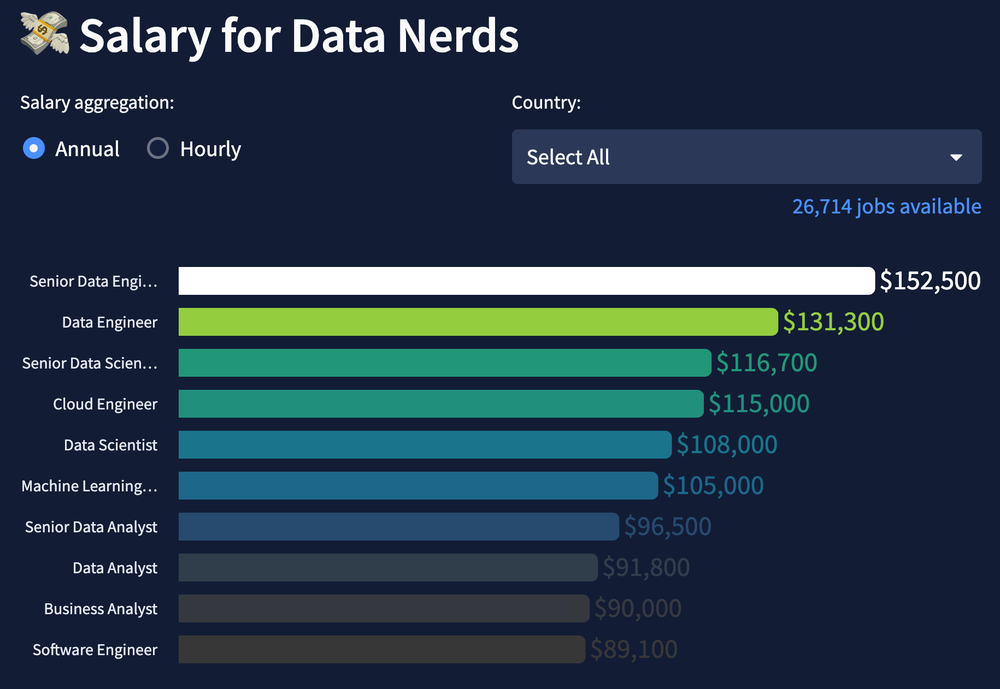
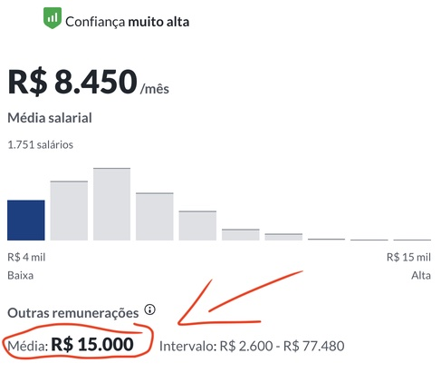
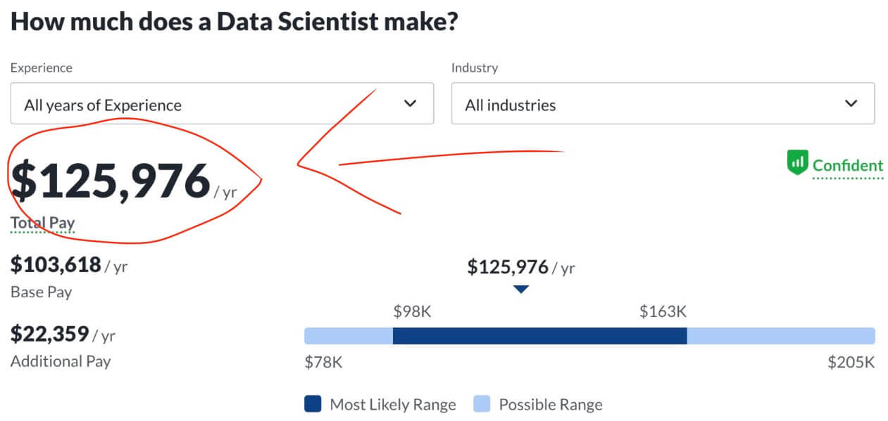

Ebook Especialista em Dados: 7 Etapas Práticas
Descubra Como se Tornar um ESPECIALISTA EM DADOS Altamente Valorizado. Entenda o Caminho para Salários de Mais de R$10 Mil em 7 Etapas Práticas!
Entre para a Área de Dados Mesmo sem Ter Experiência em Programação!
A melhor maneira para se desenvolver na área de dados!
Neste Ebook mostro as 7 etapas para você entrar ou se aperfeiçoar na área e ter uma direção de como seguir se desenvolvendo.
Me chamo Wlademir Prates, e sou um Cientista de Dados Senior e também professor de cursos de especialização com disciplinas de Machine Learning e Processamento de Linguagem Natural.
Minha formação é em Administração, e tenho doutorado em Finanças.
Não venho da área de TI e passei por inúmeras dificuldades para entrar e me desenvolver na área de dados.
Mas acredite, vale a pena.
Na área de dados geralmente você pode trabalhar de qualquer lugar (trabalho remoto) e o salário é muito bom quando comparado com outras áreas.
Neste Ebook compilei 7 etapas que irão ser seu Guia para uma carreira bem sucedida.
Falo, entre outras coisas, sobre:
- Os principais cargos e suas atribuições dentro da área de dados (cientista de dados, engenheiro de dados, engenheiro de machine learning, analista de BI e analista de dados);
- Habilidades necessárias, tanto soft (de comportamento), quanto hard (técnicas);
- Como buscar formação e educação da melhor forma;
- Dicas gerais para você construir seu portfolio e impressionar recrutadores;
- Como buscar por oportunidades de trabalho na área de forma assertiva.
o Autor
Wlademir Ribeiro Prates
“Trabalho remoto e atendo clientes do mundo inteiro!”
Cientista de Dados Senior.- Experiência em projetos de
consultoriade Data Science para grandes empresas como BASF, VIVO, DHL, BRASKEM, EMBRAER e várias outras. - Trabalhou em empresas referência em seus setores, como EY (Ernst&Young), Tembici, Appsilon e Aquarela.
Doutor e Mestreem Finanças (UFSC).- Professor com mais de
10 anosde experiência em faculdades, MBA’s e cursos online.
“Independente da sua área, aprender a trabalhar com dados ainda é um DIFERENCIAL, mas em breve será requisito OBRIGATÓRIO.”

Para profissionais da área de dados é NORMAL:
- Trabalho REMOTO.
- Vagas em empresas nacionais e INTERNACIONAIS.
- Salário ALTO.
- Muita oferta para ser freelancer.
- Área em altíssimo CRESCIMENTO.
Faça parte dos profissionais DATA DRIVEN que estão revolucionando o mercado!
São cerca de 6.500 novas vagas na área de dados todos os dias!
Milhares de profissionais ao redor do mundo estão garantindo salários altos e trabalhando em lugares onde as outras pessoas tiram férias.
Aprenda as 7 etapas necessárias para você rapidamente (poucos meses!) se juntar a estes profissionais.
Veja alguns salários no mundo (base anual) para os principais cargos.

Existem vários cargos na área de dados, mas veja como exemplo quanto ganha um Cientista de Dados …
Com o direcionamento correto ganhe pelo menos R$15.000 por mês, incluindo os benefícios!
* Veja os dados do Glassdoor ao lado.
Cientista de Dados no Brasil

Mas não se contente com pouco!
Há vagas remotas em outros países pagando $10.000 mensais, isso mesmo, dólares americanos!
* Veja os dados do Glassdoor ao lado.
Vagas remotas em outros países

Ebook Especialista em Dados: 7 Etapas Práticas
WLADEMIR RIBEIRO PRATES
Multiplique seu valor de mercado e ganhe mais de R$ 10 mil na área de dados em 7 etapas
Milhares de profissionais já estão migrando de área! 🏃
⏱️ Não fique para trás e se torne um Especialista em Dados com o Ebook “7 Etapas Práticas para Entrar na Área de Dados e Ser um Profissional de Sucesso”.
- Pela área de dados você entra em TI mesmo sem nunca ter escrito uma linha de código.
- A área de dados é praticamente à prova dos grandes layoffs (demissões) das Big Techs.
FAQ - Dúvidas frequentes
Este ebook é voltado para iniciantes em análise de dados?
Sim, este ebook é uma introdução à área de dados e é adequado para iniciantes que desejam ingressar nesse mercado.
Quanto tempo leva para concluir o ebook?
O tempo estimado de conclusão do ebook é de acordo com o seu ritmo de estudo, você pode fazer em um dia ou em algumas semanas.
Como faço para aplicar os conhecimentos de forma proativa?
O ebook apresenta dicas e estratégias para você aplicar os conhecimentos adquiridos de forma proativa, garantindo assim um destaque no mercado de trabalho.
Como posso construir um portfólio sólido?
O ebook apresenta as melhores práticas para você construir um portfólio sólido e impressionar os recrutadores na área de dados.
Qual é a diferença entre este ebook e outros disponíveis no mercado?
Este ebook se concentra nas etapas práticas e essenciais para ingressar na área de dados, abordando desde a formação e habilidades necessárias até a busca por oportunidades e o avanço na carreira.
Como faço para adquirir o ebook?
Basta clicar no botão disponível nesta página e seguir as instruções para adquirir o ebook e começar a mudar sua carreira na área de dados.
Posso compartilhar o ebook com outras pessoas?
Não. O ebook é protegido por direitos autorais e só pode ser utilizado pelo comprador. Qualquer reprodução ou distribuição sem autorização é proibida e sujeita a penalidades legais.